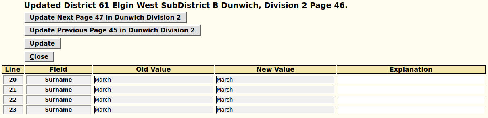

Home: Genealogy: Censuses:
This page is presented if you are authorized to update Census transcriptions but are not the first user to transcribe a specific page of a census. In this case any changes which you make to the values of fields are recorded as field notes. This page presents a list of all of the fields that you have changed and offers the ability for you to comment on why you made the changes.
If a problem was encountered with the parameters identifying the page that you were updating then an error mesage is displayed.

The identification of the specific page you are proofreading is identified.
takes you directly to the page for proofreading the next page within the current enumeration division. The keyboard shortcut for this is Ctrl-N.
takes you directly to the page for proofreading the preceding page within the current enumeration division. The keyboard shortcut for this is Ctrl-P.
records the changes you have made as field comments. These field comments will be displayed whenever a user views the census page. The keyboard shortcut for this is Ctrl-U. Note that pressing the Enter key while entering data into an explanation field also applies the updates.
discards the changes you have made. The keyboard shortcut for this is Ctrl-C.
The changes you have made to the census transcription are displayed in a tabular form. You can enter an explanation for why you believe this is a better field value.